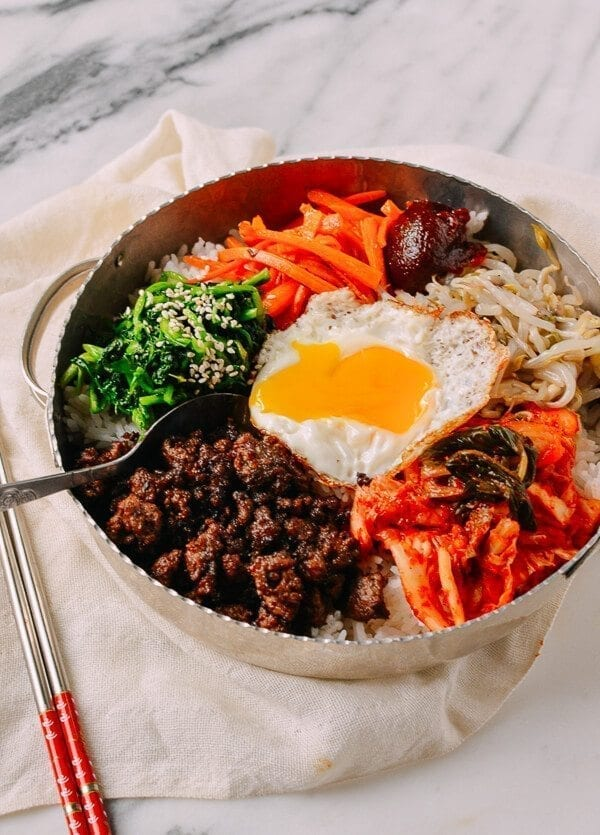

Spicy Bibimbap Recipe

Description:
Bibimbap simply translates to “mixed rice with meat and assorted vegetables“. You can make endless variations to this dish depending
on your preference and dietary requirements (e.g. microgreens bibimbap) and also based on the dish/bowl it is served in (e.g. dolsot
bibimbap and yangpun bibimbap).
Ingredients:
- Rice
- Sunny Side up Eggs
- Gochujang Sacue
- Cucumber
- Shredded Carrots
- Onions
Steps:
- To make this recipe, start by cooking the rice. While it simmers, whisk together the sauce and prep the veggies. Start with the cucumber so that it has time to marinate. Then, blanch the bean sprouts, and sauté the carrots, mushrooms, and spinach. Last but not least, cook the eggs.
- Assemble each bowl with a base of cooked rice, and top it with the egg. Place the vegetables in sections around the perimeter of the bowl, surrounding the egg, and drizzle with the gochujang sauce. When you’re ready to eat, break the egg yolk and mix the components together. (Bibimbap translates literally to mixed rice, after all!) The runny egg yolk and sauce will combine to coat the rice and veggies, which makes the bowl really flavorful and fun to eat.